Many Zebra scanner devices support active monitoring of device performance over time. Such statistical data is collected and stored locally on each device. This data can be retrieved with directives from Zebra's IoT Connector utility or by sending CoreScanner API commands to the scanner device using the Scanner SDK Sample Application for example.
When a notification of a critical change to a scanner device is needed, a feature called “Real Time Alerts” can be used to transmit alerts from the scanner or cradle to a host when certain requested statistic values change, or events occur.
Real Time Alerts (RTA) are a selection of events that are monitored by a scanner device. When a selected statistic has reached a specified value or when a selected event occurs, it is then reported by the scanner device to the host as an Alert.
The scanner device and its installed firmware must support RTA monitoring, and the data or feature being monitored must be enabled on the device before an alert can be registered.
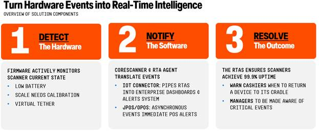
Figure 1: Real Time Alerts OverviewEach scanner model maintains a selection of Real Time Alerts (RTAs) that it supports, and the client's host system can configure the alerts that are of concern.
Zebra provides downloadable utilities, code libraries, interfaces and services that assist in the use of the Real Time Alert features. RTA features have been added to the following Zebra host software:
Real Time Alerts must first be registered on RTA-capable devices using the RTA Agent which runs in the background on the host system. Supported RTAs are configured by the RTA Agent as defined in its configuration file RTAAgent-Config.xml. The RTA Agent monitors the host for scanner connections and when detected, configures the RTAs on the scanner as specified in the RTAAgent-Config.xml file.
When a specified RTA occurs on a scanner, it sends that RTA event to the host system where it can be collected and processed by:
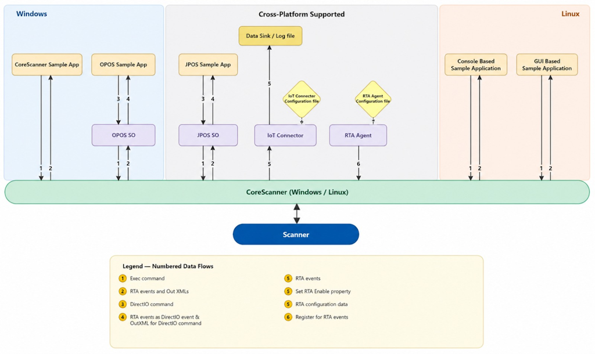
Figure 2: How Real Time Alerts Work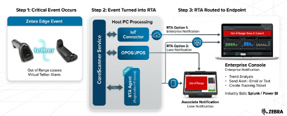
Figure 3: Out-of-Range Event Turned into a Real Time AlertThe scanner’s RTA configuration only lives as long as the scanner remains continuously discovered by CoreScanner. If a scanner is rebooted, reconnected or power cycled, its RTA configuration is lost. The RTA Agent handles this scenario as it monitors scanner connection events and reprograms devices each time they reconnect to the host system’s CoreScanner process.
Please refer to RTA agent documentation (Hyper link in techdocs to RTA agent documentation both Linux and Windows )
Enable RTA alerts in IoTConnector-Config.xml by setting the tag to True as shown Below
<!-- Configure RTA events - intended for collection of scanner real time alerts-->
<on-real-time-alerts enabled="true"/>
Please refer to IoT documentation for further information on how to use IoT connector (Hyper link for IoT connector both Linux and windows)
The RTA Agent uses the CoreScanner API to configure the Real Time Alerts (RTA) feature on a scanner or cradle device. There is also a CoreScanner API call to receive notifications when an RTA event is sent by the scanner or cradle.
Real Time Alerts (RTAs) operate on a subscription-based notification system. For an application developed using the CoreScanner API to receive these alert events from a device, it must be configured to listen for the appropriate events.
The CoreScanner mechanism to receive RTA events involves two phases:
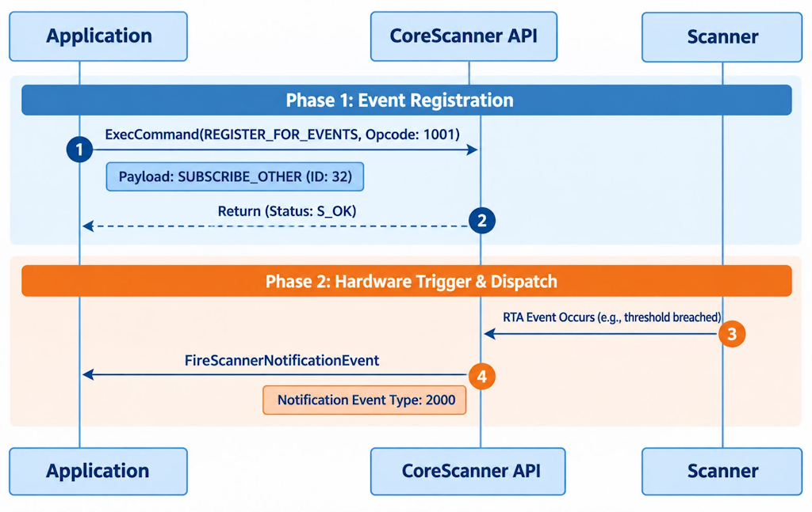
Figure 4: CoreScanner RTA Event Flow on WindowsSyntax:
C#
void ExecCommand(
int opcode,
ref string inXML,
out string outXML,
out int status);
C++
virtual /* [helpstring][id] */ HRESULT STDMETHODCALLTYPE ExecCommand(
/* [in] */ LONG opcode,
/* [in] */ BSTR *inXML,
/* [out] */ BSTR *outXML,
/* [out] */ LONG *status) = 0;
Parameters
Return Values
C++
#define REGISTER_FOR_EVENTS 1001
long nRouterResult = S_OK;
long status = -1;
CComBSTR inXML = LR"(<inArgs>
<cmdArgs>
<arg-int>1</arg-int> <!-- Number of Events -->
<arg-int>32</arg-int> <!-- Event ID/s -->
</cmdArgs>
</inArgs>)";
CComBSTR outXML;
nRouterResult = ExecCommand(REGISTER_FOR_EVENTS, &inXML, &outXML, &status);
C#
const int REGISTER_FOR_EVENTS = 1001;
const int S_OK = 0;
long nRouterResult = S_OK;
long status = -1;
string inXML = @"<inArgs>
<cmdArgs>
<arg-int>1</arg-int> <!-- Number of Events -->
<arg-int>32</arg-int> <!-- Event ID/s -->
</cmdArgs>
</inArgs>";
string outXML = string.Empty;
nRouterResult = ExecCommand(REGISTER_FOR_EVENTS, ref inXML, ref outXML, ref status);
Syntax
C#
void OnScannerNotification(
short notificationType,
ref string pScannerData)
C++
void OnScannerNotification(
short notificationType,
BSTR pScannerData)
Notification Event Types
Table 1: Notification Event Types (Windows)
| Event Type | Value | Description |
|---|---|---|
| DECODE_MODE | 1 | Trigger when a scanner changes its operation mode to decode. |
| SNAPSHOT_MODE | 2 | Trigger when a scanner changes its operation mode to image mode. |
| VIDEO_MODE | 3 | Trigger when a scanner changes its operation mode to video mode. |
| DEVICE_ENABLED | 13 | Trigger when the scanner is enabled. |
| DEVICE_DISABLED | 14 | Trigger when the scanner is disabled. |
| RTA_EVENT | 2000 | Trigger when RTA event is received. |
Sample app code snippet.
C#
const int RTA_EVENT = 2000;
void OnScannerNotification(short notificationType, ref string pScannerData)
{
try
{
switch (notificationType)
{
case RTA_EVENT:
UpdateResults("Scanner Notification : RTA Event Received");
UpdateRtaEvent(pScannerData);
break;
.
.
}
}
catch (Exception)
{
}
}
The CoreScanner mechanism to receive RTA events involves two phases:
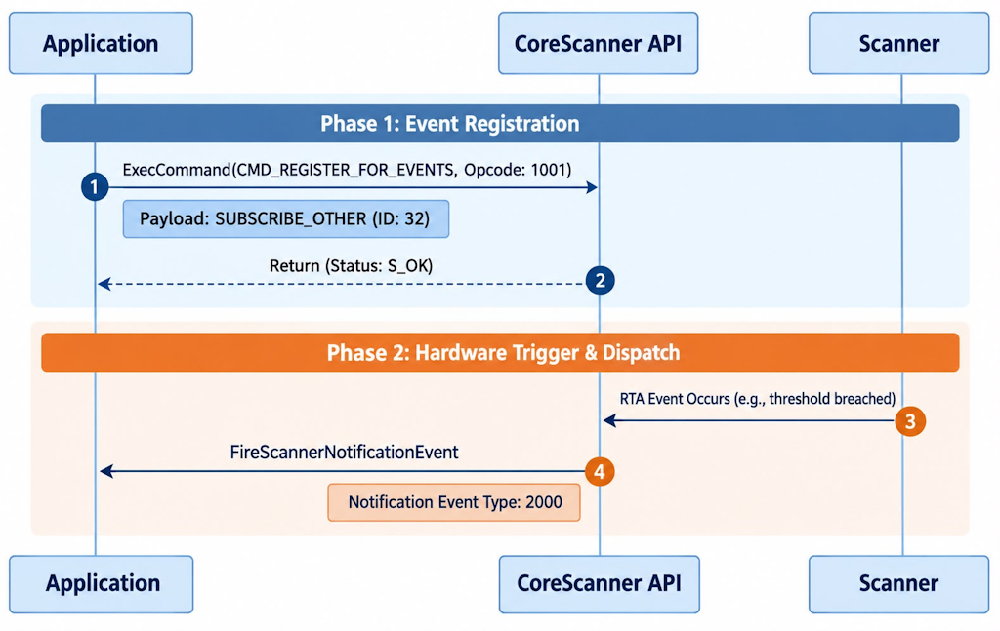
Figure 5: CoreScanner RTA Event Flow on LinuxSyntax:
unsigned short ExecCommand(
unsigned int opcode,
std::string inXml,
std::string &outXml,
StatusID *status
)
Parameters
Return Values
enum CmdOpcode::CMD_REGISTER_FOR_EVENTS = 1001
StatusID status;
std::string inXml =
"<inArgs>
<cmdArgs>
<arg-int>1</arg-int>
<arg-int>32</arg-int>
</cmdArgs>
</inArgs>";
std::string outXml;
::ExecCommand(CMD_REGISTER_FOR_EVENTS, inXml, outXml, &status);
Syntax
virtual void OnScannerNotification(
short notificationType, // Notification event type
std::string& pScannerData // Notification event input/output
);
Notification Event Types
Table 2: Notification Event Types (Linux)
| Event Type | Value | Description |
|---|---|---|
| SCANNER_NOTIFICATION_UKNOWN | 0 | |
| SCANNER_NOTIFICATION_DECODE_MODE | 1 | Trigger when a scanner changes its operation mode to decode. |
| SCANNER_NOTIFICATION_SNAPSHOT_MODE | 2 | Trigger when a scanner changes its operation mode to image mode. |
| SCANNER_NOTIFICATION_VIDEO_MODE | 3 | Trigger when a scanner changes its operation mode to video mode. |
| RTA_EVENT | 2000 | Trigger when RTA event is received. |
Sample app code snippet.
const int RTA_EVENT = 2000;
Void OnScannerNotification(short notificationType, std::string& pScannerData) {
switch ( notificationType ){
case RTA_EVENT:
UpdateResults("Scanner Notification : RTA Event Received");
UpdateRtaEvent(pScannerData);
break;
default:
break;
}
}
<?xml version="1.0" encoding="UTF-8"?>
<outArgs>
<scannerID>2</scannerID>
<arg-xml>
<modelnumber>DS8178-SR0F007ZZWW</modelnumber>
<serialnumber>99887766556655 </serialnumber>
<GUID></GUID>
<rta>
<id>30012</id>
<type>12</type>
<data-1>99</data-1>
<data-2>0</data-2>
<raw-data>0x75 0x3C 0x00 0x0C 0x00 0x63 0x00 0x00 0x00 0x00 </raw-data>
</rta>
</arg-xml>
</outArgs>
Under the <rta> tag:
The <raw-data> tag includes the following data structure.
Table 3: RTA Event Raw Data Structure
| Byte | Description |
|---|---|
| 1 - 2 | RTA event attribute |
| 3 - 4 | RTA Stat type |
| 5 - 6 | RTA event data 1 |
| 7 - 8 | RTA event data 2 (optional) |
| 9 - 10 | Future use |
The CoreScanner driver API exposes six (6) methods for Real-Time Alert (RTA) operations, which can be invoked using the ExecCommand API. These methods are supported across the USB-SNAPI, USB-OPOS, USB-IBM Handheld, and USB-IBM Table-top scanner communication protocols. The following sections detail these methods, including their required inXML and expected outXML payload structures.
Gets RTA events supported by the device.
InXML
<inArgs>
<scannerID>1</scannerID>
</inArgs>
OutXML
Supported RTA events (ID and Stat type) along with on-limit & off-limit.
NOTE: On-limit/Off-limit with "Not set" requires the value to be set when registering, and "Not applicable" doesn't require a value to be set.
<?xml version="1.0" encoding="UTF-8"?>
<outArgs>
<scannerID>1</scannerID>
<arg-xml>
<modelnumber>CR8178-PCM00FBWW</modelnumber>
<serialnumber>23117010558099</serialnumber>
<GUID>B2887932D8F09D40880BFAE7AD61A8BA</GUID>
<configname>Modified</configname>
<response>
<opcode>5500</opcode>
<rtaevent_list>
<rtaevent>
<id>38004</id>
<stat>7</stat>
<onlimit>Not set</onlimit>
<offlimit>Not applicable</offlimit>
</rtaevent>
<rtaevent>
<id>38001</id>
<stat>7</stat>
<onlimit>Not set</onlimit>
<offlimit>Not applicable</offlimit>
</rtaevent>
<rtaevent>
<id>38003</id>
<stat>13</stat>
<onlimit>Not applicable</onlimit>
<offlimit>Not applicable</offlimit>
</rtaevent>
<rtaevent>
<id>616</id>
<stat>2</stat>
<onlimit>Not applicable</onlimit>
<offlimit>Not applicable</offlimit>
</rtaevent>
</rtaevent_list>
</response>
</arg-xml>
</outArgs>
Unregister for selected RTA events using RTA event ID and type.
InXML
<inArgs>
<scannerID>1</scannerID>
<cmdArgs>
<arg-xml>
<rtaevent_list>
<rtaevent>
<id>38004</id>
<stat>7</stat>
</rtaevent>
<rtaevent>
<id>38001</id>
<stat>7</stat>
</rtaevent>
</rtaevent_list>
</arg-xml>
</cmdArgs>
</inArgs>
OutXML: Null
Retrieve the RTA event's alert status. The RTA alert status contains information on the following four statuses:
InXML
<inArgs>
<scannerID>1</scannerID>
</inArgs>
OutXML
<outArgs>
<scannerID>1</scannerID>
<arg-xml>
<modelnumber>CR8178-PC100F4WW </modelnumber>
<serialnumber>17034010506402 </serialnumber>
<GUID>8835E76BE40A6C49B458BEEA0065F60E</GUID>
<configname>Factory Default </configname>
<response>
<opcode>5503</opcode>
<suspend>FALSE</suspend>
<rtaevent_list>
<rtaevent>
<id>38004</id>
<stat>7</stat>
<scope>0</scope>
<registered>TRUE</registered>
<reported>FALSE</reported>
<initialized>TRUE</initialized>
<measuring>FALSE</measuring>
</rtaevent>
<rtaevent>
<id>38001</id>
<stat>7</stat>
<scope>0</scope>
<registered>TRUE</registered>
<reported>TRUE</reported>
<initialized>TRUE</initialized>
<measuring>TRUE</measuring>
</rtaevent>
</rtaevent_list>
</response>
</arg-xml>
</outArgs>
Set RTA event's reported state. NOTE: Only the <reported> alert status can be modified, and it can only be transitioned from true (1) to false (0). If set to any other value, the system will automatically overwrite it with 0.
InXML
<inArgs>
<scannerID>1</scannerID>
<cmdArgs>
<arg-xml>
<rtaevent_list>
<rtaevent>
<id>38004</id>
<stat>7</stat>
<reported>0</reported>
</rtaevent>
<rtaevent>
<id>616</id>
<stat>2</stat>
<reported>0</reported>
</rtaevent>
</rtaevent_list>
</arg-xml>
</cmdArgs>
</inArgs>
OutXML: Null
Toggle RTA alert notification reporting to the host.
InXML
<inArgs>
<scannerID>1</scannerID>
<cmdArgs>
<arg-bool>false</arg-bool> <!--"true" will enable RTA to suspend, "false" will disable RTA suspend -->
</cmdArgs>
</inArgs>
OutXML: Null
Retrieve the current operational state of RTAs. State will have 4 values as follows.
Table 4: RTA State Values
| State Name | Value | Description |
|---|---|---|
| Wait For Register | 1 | There are currently no alerts registered by the User. |
| Wait for Context | 2 | The scanner has not yet been assigned a Context Address for reporting. |
| Online | 3 | The Real Time Alerts feature is fully operational. |
| Suspend | 0 | The Real Time Alerts were suspended automatically or by the RTA_Suspend command. |
InXML
<inArgs>
<scannerID>1</scannerID>
</inArgs>
OutXML
<outArgs>
<scannerID>1</scannerID>
<arg-xml>
<modelnumber>CR8178-PC100F4WW </modelnumber>
<serialnumber>17034010506402 </serialnumber>
<GUID>8835E76BE40A6C49B458BEEA0065F60E</GUID>
<configname>Factory Default </configname>
<response>
<opcode>5506</opcode>
<state>0</state>
</response>
</arg-xml>
</outArgs>
The RTA feature is disabled until one or more RTA Alerts are registered. This registration occurs when the RTA Agent sends a message to the device telling it to enable one or more alerts.
In its simplest form, a single scanning device is connected to a host interface. The RTA Agent running on the host device can send RTA configuration data and commands to register and send alerts. Applications such as Zebra’s IoTConnector can register for and receive events when alerts are sent by scanner devices.
Some scanning devices are connected to a host via a wireless connection to a cradle, or as an auxiliary wired scanner connected to a primary scanning device. In this case, the RTA commands and data are routed to and from the scanner from one device to the next until reaching the host. Each device in the chain is automatically assigned a “context address”, and this address conveys to the host the endpoint where the RTA commands and data originate. When a scanner connects to the chain of devices, RTA will not be enabled until it is given a “Context Address”.
Once a compliant scanning device has one or more alerts registered, and it is assigned a Context Address, then the Real Time Alerts feature goes online.
The following diagram shows the states of the Real Time Alerts feature in an individual scanner or cradle device.
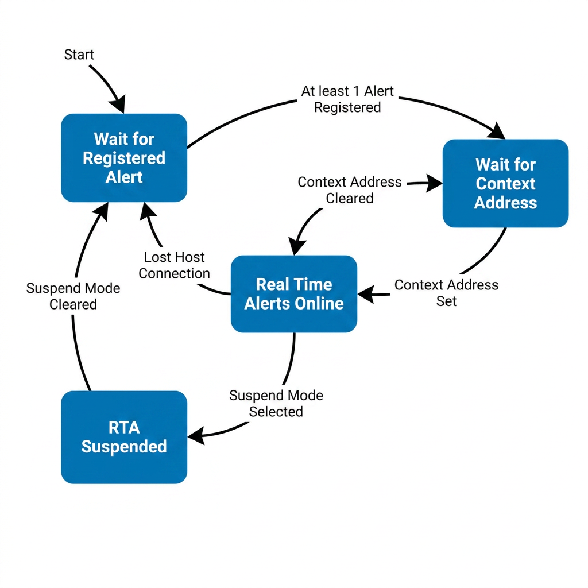
Figure 6: Real Time Alerts Feature States in a Scanner or Cradle DeviceThe Host system can look up the current state of the Real Time Alert feature. Note that if a device does not immediately have a Context Address, it usually resolves itself in a minute. Table 4 shows the meaning of the RTA state value returned when requested by the host.
The OPOS driver uses DirectIO commands to invoke Real-Time Alerts (RTA) methods on the scanner or cradle device and utilizes DirectIO events to receive notifications when an RTA event is triggered by the scanner. Because the Zebra OPOS Service Object automatically registers for CoreScanner notification events during the initial Open call, the host application does not need to perform manual registration to receive RTA events.
Syntax
LONG DirectIO (LONG Command, LONG* pData, BSTR* pString);
Table 5: OPOS DirectIO Parameters
| Parameter | Description |
|---|---|
| Command | Command number. Represents the specific operation assigned by the Service Object. Supported RTA commands include:
|
| pData | Retrieves the CoreScanner status of the executed RTA command. This allows users to verify the execution status and identify if any errors occurred during command execution via CoreScanner. |
| pString | Input/Output string pointer. This pointer is used to bind the input XML (inXML) for the command, and it is overwritten to retrieve the output XML (outXML) sent by the CoreScanner service upon return. For more information, see the CoreScanner Methods for RTA section. |
#define DIO_RTA_GET_SUPPORTED 5500
COPOSScanner m_ctrlScanner;
LONG retVal;
CComBSTR inXML = LR"(<inArgs>
<scannerID>1</scannerID>
</inArgs>)";
LONG a = -1;
retVal = m_ctrlScanner.DirectIO(DIO_RTA_GET_SUPPORTED, &a, &inXML);
class CSampleApp_OPOS_Scanner_Dlg : public CDialog {
protected: COPOSScanner m_ctrlScanner;
public: virtual BOOL OnInitDialog() {
CDialog::OnInitDialog();
m_ctrlScanner.Open("ZEBRA_SCANNER");
m_ctrlScanner.ClaimDevice(1000);
m_ctrlScanner.SetDeviceEnabled(TRUE);
return TRUE;
}
void DirectIOEventScanner1(long EventNumber, long* pData, BSTR* pString) {
if (EventNumber == 2000){
if (pString && *pString)
{
std::wcout << L"RTA Event Received :: " << *pString << std::endl;
}
}
}
// This map connects the ActiveX control's event to handler function.
BEGIN_EVENTSINK_MAP(CSampleApp_OPOS_Scanner_Dlg, CDialog)
ON_EVENT(CSampleApp_OPOS_Scanner_Dlg, IDC_SCANNER1, 2, DirectIOEventScanner1, VTS_I4 VTS_PI4 VTS_PBSTR)
END_EVENTSINK_MAP()
};
The JPOS driver uses DirectIO commands to invoke Real-Time Alerts (RTA) methods on the scanner or cradle device and utilizes DirectIO events to receive notifications when an RTA event is triggered by the scanner. Because the Zebra JPOS Service Object automatically registers for CoreScanner notification events during the initial Open call, the host application does not need to perform manual registration to receive RTA events.
Syntax
void directIO (int command, int[] data, Object object) throws JposException;
Table 6: JPOS DirectIO Parameters
| Parameter | Description |
|---|---|
| Command | Command number. Represents the specific operation assigned by the Service Object. Supported RTA commands include:
|
| pData | Retrieves the CoreScanner status of the executed RTA command. This allows users to verify the execution status and identify if any errors occurred during command execution via CoreScanner. |
| pString | Input/Output string pointer. This pointer is used to bind the input XML (inXML) for the command, and it is overwritten to retrieve the output XML (outXML) sent by the CoreScanner service upon return. For more information, see the CoreScanner Methods for RTA section. |
public static final int DIO_RTA_GET_SUPPORTED = 0x157C; //5500
private int opCode = DIO_RTA_GET_SUPPORTED ;
private StringBuffer deviceParams = new StringBuffer();
deviceParams.append("<inArgs><scannerID>1</scannerID></inArgs>");
private int[] statusScanner = new int[]{-1};
device.setDirectIO(opCode, statusScanner , (Object) deviceParams);
Scanner scannerAll = new jpos.Scanner();
try {
scannerAll.open(("ZebraAllScanners"));
scannerAll.claim(1000);
scannerAll.setDeviceEnabled(true);
scannerAll.addDirectIOListener(new DirectIOListener() {
@Override
public void directIOOccurred(DirectIOEvent de) {
System.out.println("Scanner:: DirectIO event occured");
switch (de.getEventNumber()) {
case 2000:
System.out.println("RTA event type : " + de.getEventNumber() + " Event Data : " + ((String) de.getObject()));
break;
}
}
});
} catch (JposException ex) {
System.out.println("Scanner:: Exception in accessing Scanner " + ex.getMessage());
}
The Zebra Scanner SDK OPOS/JPOS provides support for managing Real Time Alerts (RTA) on Zebra scanners using Direct I/O commands. RTA configuration is performed using the RTA Agent [Link to RTA Agent]. The OPOS sample application can be used as a reference to guide how to use the RTA Direct IO commands to monitor the RTA events. The same steps apply when using JPOS.
To send Direct I/O commands using the OPOS sample application, follow the steps below:
To determine the RTA events supported by the scanner, use the DIO_RTA_GET_SUPPORTED command:
The supported RTA events will be displayed in the OutXml section. Detailed explanations of these events can be found on the RTA documentation page. Real Time Alert (RTA) - Events <Should be updated with correct link >
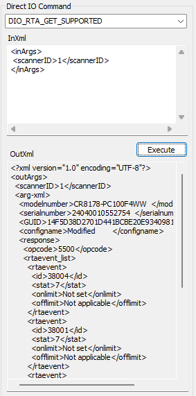
Figure 7: Supported RTA Events Returned by DIO_RTA_GET_SUPPORTEDNote: If the connected device does not support the RTA feature, the CoreScanner status will display code 117, and the Return Value and Result Code will be displayed as OPOS_E_EXTENDED.
For demonstration purposes, select the RTA attribute "Scanner out of cradle (38004)" from the List of Supported Real Time Alerts <Should be updated with correct link >.
In the configuration xml in RTA Agent, values must be provided for the <id>, <stat>, and <onlimit> tags. The correct values for these tags can be determined by referring to the table’s “Attribute”, “Type”, and “Reporting Value Range” columns, which provide the necessary details for accurate configuration.
For this example, ID 38004 is selected.
The associated RTA name specifies: "Scanner is off the charger/cradle for a measured time."
The description: "The cordless scanner was removed from its charger/cradle for an extended period." Upon reviewing the Description, it becomes clearer that this event tracks the duration the cordless scanner remains out of its charger or cradle.
From the Type column, the value is identified as 7. A Type 7 value indicates that the event is designed to monitor an “above-threshold” condition, meaning the RTA event will be triggered once a specified threshold is exceeded.
The threshold is defined by setting the on-limit value, which can be determined from the “Reporting Value Range” column. For this example, the range is 5–600 minutes, allowing any value within this range to be selected. For demonstration purposes, the on-limit is set to 5 minutes.
Thus, for the RTA 38004 attribute, the configuration is established to monitor an above-threshold condition with an on-limit of 5 minutes. This means that if the scanner remains out of the cradle for more than 5 minutes, the RTA event will be triggered.
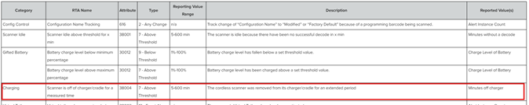
Figure 8: Supported Alerts Entry for Attribute 38004Reference: List of Supported Real Time Alerts <Should be updated with correct link >.
To use the RTA feature, the desired RTA events must be registered first. For this process, we need to use the RTA Agent utility [Link to RTA Agent].
For the demonstration will use 38004 attribute. In the RTA agent configuration xml file, make sure the following attribute details are available. If not, add the following details in the <rtaevent_list> tag.
<rtaevent>
<id>38004</id> <-- Attribute ID
<stat>7</stat> <-- Type
<onlimit>5</onlimit> <-- Reporting Value Range
<offlimit>Not applicable</offlimit>
</rtaevent>
This command retrieves the current alert status of registered RTA events.
The response will include the status of each RTA event, indicating the following individual status:
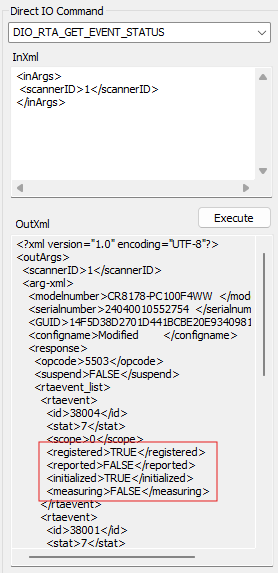
Figure 9: RTA Event Status Returned by DIO_RTA_GET_EVENT_STATUSAfter successfully registering for the RTA event with ID 38004, the event will appear as Registered = TRUE and Reported = FALSE when checked using the DIO_RTA_GET_EVENT_STATUS command.
To simulate the event: Remove the scanner from the cradle and wait for 5 minutes (based on the on-limit value set to 5).
If the scanner is not returned to the cradle within this time frame, an RTA event will be triggered. Check the Log View in the OPOS sample application to verify that the RTA event was reported.
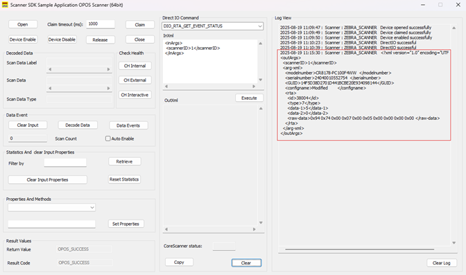
Figure 10: OPOS Sample Application Log View with a Reported RTA EventNote: Refer to this page for detailed information on the structure and content of RTA_EVENT messages. Real Time Alert (RTA) - Event XML Explanation <Should be updated with correct link >
To verify the alert was triggered:
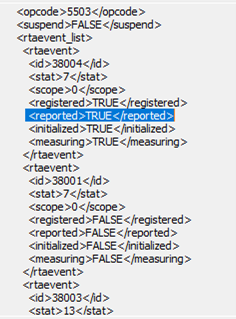
Figure 11: Event Status Showing Reported = TRUEThis command resets the Reported status of a specific RTA event back to FALSE.
To verify this:
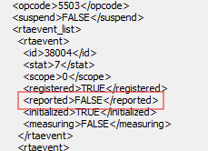
Figure 12: Event Status Showing Reported = FALSE After ResetThis command temporarily disables triggering of RTA events.
<inArgs>
<scannerID>1</scannerID>
<cmdArgs>
<arg-bool>true</arg-bool>
</cmdArgs>
</inArgs>
To unregister RTA events:
Note: Multiple <rtaevent> entries can be included within the <rtaevent_list> element to unregister multiple events at once.
<inArgs>
<scannerID>1</scannerID>
<cmdArgs>
<arg-xml>
<rtaevent_list>
<rtaevent>
<id>38004</id>
<stat>7</stat>
</rtaevent>
</rtaevent_list>
</arg-xml>
</cmdArgs>
</inArgs>
Then call DIO_RTA_GET_EVENT_STATUS. Registered set to False.
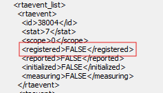
Figure 13: Event Status Showing Registered = False After UnregisteringThe DIO_RTA_GETSTATE command is used to query the current state of the Real Time Alert (RTA) feature on the connected scanner.
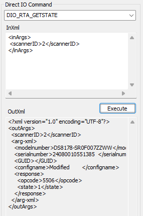
Figure 14: RTA State Returned by DIO_RTA_GETSTATETable 4: RTA State Values describes the possible RTA state values returned by this command.
The Real Time Alerts feature is available for products that support the Zebra Remote Scanner Management (RSM) protocol. These RTA messages are encapsulated in the protocols of the following interfaces:
For the Real Time Alerts feature to work, the scanner device must be configured to operate in one of the above Host Protocols.
The following table shows all of the currently supported Real Time Alerts. The list of products that support these Alerts can be found in List of Supported Products.
Table 7: List of Supported Real Time Alerts
| Category | RTA Name | Attribute | Type | Reporting Value Range | Description | Reported Value(s) |
|---|---|---|---|---|---|---|
| Config Control | Configuration Name Tracking | 616 | 2 - Any Change | n/a | Track change of “Configuration Name” to “Modified” or “Factory Default” because of a programming barcode being scanned. | Alert Instance Count |
| Scanner Idle | Scanner Idle above threshold for x min | 38001 | 7 - Above Threshold | 5-600 min | The scanner is idle because there have been no successful decode in x min | Minutes without a decode |
| Gifted Battery | Battery charge level below minimum percentage | 30012 | 9 - Below Threshold | 1%-100% | Battery charge level has fallen below a set threshold value. | Charge Level of Battery |
| Gifted Battery | Battery charge level above maximum percentage | 30012 | 7 - Above Threshold | 1%-100% | Battery charge level has been charged above a set threshold value. | Charge Level of Battery |
| Charging | Scanner is off of charger/cradle for a measured time | 38004 | 7 - Above Threshold | 5-600 min | The cordless scanner was removed from its charger/cradle for an extended period | Minutes off charger |
| Virtual Tether | Virtual tether alarm was signaled | 38003 | 13 - Event Alarm | n/a | The scanner's Virtual Tether alarm has been activated. | Alert Instance Count |
| Scale | Scale Display Communication Error Flag | 15251 | 14 - Event Fault | n/a | The scale display is enabled but the display is not connected or there is a communication fault with the display. | Alert Instance Count |
| Scale | Scale Needs Calibration Flag | 15241 | 13 - Event Alarm | n/a | The scale's current state is that it needs calibration. | Alert Instance Count |
| Scale | Scale Communication Error Flag | 15247 | 14 - Event Fault | n/a | Communication with the scale is lost such as when the scale power cable is disconnected or there is a communications fault. | Alert Instance Count |
| Weight Guard | Weight Guard Declined Scale Reading | 38007 | 13 - Event Alarm | n/a | A scale read weight was tried and it was declined because of an unstable weight or it has an item(s) hanging over one or both edges of the scale. The state of the infrared sensors must not have "Red Calibration Health". | Alert Instance Count |
| Weight Guard | Weight Guard Communication Error Flag | 38008 | 14 - Event Fault | n/a | A communications error occurred that meets the reporting requirements of Weight Warden. The state of the infrared sensors must not have "Red Calibration Health". | Alert Instance Count, and Reporting Sensors |
| Weight Guard | Weight Guard Infrared Red Health Status | 38009 | 14 - Event Fault | n/a | An alert is sent if the Data Health of either IR sensor reaches the Red health level. | Alert Instance Count, and Reporting Sensors |
| Weight Guard | Weight Guard Infrared Orange Health Status | 38010 | 13 - Event Alarm | n/a | An alert is sent if the Data Health of either IR sensor reaches the Orange health level. | Alert Instance Count, and Reporting Sensors |
| Electronic Article Surveillance | Sensormatic EAS Device Detach | 38015 | 13 - Event Alarm | n/a | An alert is sent if a scanner EAS device is detached. | Alert Instance Count |
Table 8: List of Supported Products
| Category | RTA Name | Attribute | Type | MP7200 | MP7 | SP7200 | DS8108/DS8208 | CR8178/CR8288 | DS8178/DS8288 |
|---|---|---|---|---|---|---|---|---|---|
| Config Control | Config File Name Tracking | 616 | 2 - Any Change | X | X | X | X | X | |
| Scanner Idle | Scanner Idle above threshold for x min | 38001 | 7 - Above Threshold | X | X | X | X | ||
| Gifted Battery | Battery charge level below minimum percentage | 30012 | 9 - Below Threshold | X | |||||
| Gifted Battery | Battery charge level above maximum percentage | 30012 | 7 - Above Threshold | X | |||||
| Charging | Scanner is off charger/cradle for a measured time | 38004 | 7 - Above Threshold | X | |||||
| Virtual Tether | Virtual tether alarm was signaled | 38003 | 13 - Event Alarm | X | |||||
| Scale | Scale Display Communication Error Flag | 15251 | 14 - Event Fault | X | X | ||||
| Scale | Scale Needs Calibration Flag | 15241 | 13 - Event Alarm | X | X | ||||
| Scale | Scale Communication Error Flag | 15247 | 14 - Event Fault | X | X | ||||
| Weight Guard | Weight Guard Declined Scale Reading | 38007 | 13 - Event Alarm | X | |||||
| Weight Guard | Weight Guard Communication Error Flag | 38008 | 14 - Event Fault | X | |||||
| Weight Guard | Weight Guard Infrared Red Health Status | 38009 | 14 - Event Fault | X | |||||
| Weight Guard | Weight Guard Infrared Orange Health Status | 38010 | 13 - Event Alarm | X | |||||
| Electronic Article Surveillance | Sensormatic EAS Device Detach | 38015 | 13 - Event Alarm | X |
This alert monitors the current battery charge level on a wireless scanner. If it reaches or goes below the On-Limit value, then an alert is sent. Once the alert is on, if the scanner is charged to the Off-Limit value, then the alert is turned off. The system is then ready to monitor this alert again.
NOTES:
This alert monitors the current battery charge level on a wireless scanner. If it reaches or goes above the On-Limit value, then an alert is sent. Once the alert is on, if the battery discharges and reaches below the Off-Limit value, then the alert is turned off. The system is then ready to monitor this alert again.
NOTES:
This alert watches the wireless scanner's cradle insertion status. If the scanner is removed from the cradle more than the number of minutes specified on the On-Limit, then an alert is sent. Once the alert is on, if the scanner is inserted into the cradle, then the alert is turned off. The system is then ready to monitor this alert again.
NOTES:
This alert monitors the Virtual Tether feature status. If the feature is enabled on the cradle, and an out-of-range alarm was sounded, then an alert is sent. Once the alert is on, if the alert is cancelled or stopped, then the alert is turned off. The system is ready to monitor this alert again.
NOTES:
This alert monitors for a Display Communication Error statistic being reported. If there is a communication error reported, then an alert is sent. Once the alert is on, if the display communication error no longer exists then the alert is turned off. The system is ready to monitor this alert again.
NOTES:
This alert monitors for the Scale Calibration statistic to be reported as False. If there is a need for calibration, an alert is sent. When the calibration process is completed, the scanner is restarted. This will cause the RTA component to restart. So, following Calibration of the scale, all alerts are unregistered.
NOTES:
This alert monitors for when a Read Weight request is made and is declined because the Weight Guard software detected a Beam Break. When this occurs, an alert is sent. Once the alert is on, if a non-zero Read Weight request is successfully made, then the alert is turned off. The system is ready to monitor this alert again.
NOTES:
This alert monitors the Weight Guard subsystem to report a Red health level over UIF (Red LED) and also checks if one or both IR sensors report the Red health status. If this occurs, an alert is sent. Once the alert is on, if the Red LED UIF indication is cancelled, and both IR sensors no longer have the Red Health status, then the alert is turned off. The system is then ready to monitor this alert again.
NOTES:
This alert monitors if the Weight Guard subsystem reports a message that one or both of the IR sensors have the Orange health status. When this occurs, an alert is sent. Once the alert is on, if both IR sensors no longer have the Orange Health status, then the alert is turned off. The system is then ready to monitor this alert again.
NOTES:
This alert monitors if the Weight Guard subsystem reports a communication error. When this occurs, n alert is sent. Once the alert is on, if Weight Guard reports no communication error, then the alert is turned off. The system is then ready to monitor this alert again.
NOTES:
This alert monitors the scale's UART driver for a communication error. When this occurs, an alert is sent. Once the alert is on, if the communication rrror is cleared, the alert is turned off. The system is rhen ready to monitor this alert again.
Notes:
This alert monitors communication with the Sensormatic external device. When in the Measuring state, the alert code will monitor the current status of the external Sensormatic device. If the Sensormatic device is found to be unresponsive or unattached, an alert is sent. Once the alert is on, if the Sensormatic external device is communicating, the alert is turned off. The system is then ready to monitor this alert again.
Notes:
This alert monitors the timing between successful decodes. If the scanner (the attached wireless scanner) does not have a successful decode in a time interval more than the number of minutes specified on the On-Limit, an alert is sent. Once the alert is on, if the scanner successfully decodes a barcode, the alert is turned off. The system is then ready to monitor this alert again.
Notes:
This alert monitors the value of the scanner device's last loaded Configuration Name. If the Configuration Name (#616) is changed to “Modified” or “Factory Defaults”, an alert is sent. Once the alert is on, if the Configuration Name is updated to a string other than “Modified” or “Factory Defaults”, the alert is turned off. The system is then ready to monitor this alert again.
Notes: